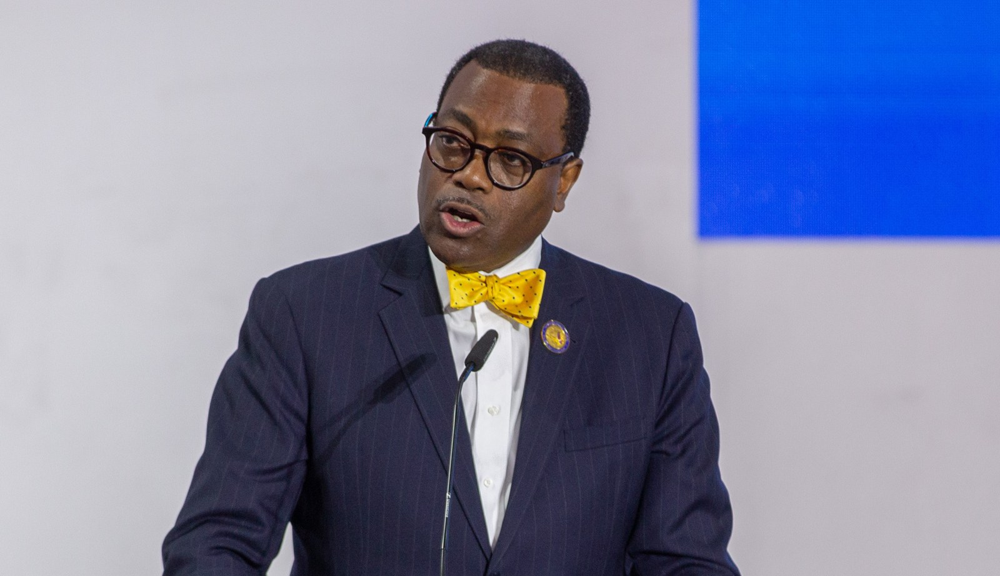

‘I have a duty to serve Nigeria, and I will’ — Adesina tells Tinubu

Former African Development Bank president Akinwumi Adesina has told President Bola Tinubu he is ready to contribute to Nigeria’s development in any capacity. He made the offer after meeting Tinubu at the Presidential Villa in Abuja on Tuesday, where he briefed the president on his decade leading the bank. Adesina said he was not seeking a government appointment, adding: “I’m not looking for a job. I’m not looking for anything. I’m just here to help.” No specific role or appointment was announced after the meeting.
Adesina said the AfDB provided about $7 billion in financing to Nigeria between 2015 and 2025, compared with $11.1 billion in cumulative financing since the bank began operating in the country in 1971. He said the amount provided during his tenure represented 63 per cent of the total. His term as AfDB president ended in 2025 after two five-year terms. He was elected in 2015 and re-elected in 2020.
An agricultural economist, Adesina served as Nigeria’s minister of agriculture and rural development from 2011 to 2015. In that role, he promoted an electronic-wallet system through which farmers could receive support for seeds and fertiliser by mobile phone. The AfDB said the programme reached 15 million farmers in its first four years. During his leadership of the bank, its agenda included expanding electricity access, improving food security and supporting industrialisation and regional integration. The bank’s general capital rose from $93 billion to $208 billion in 2019 following a shareholder decision, its largest increase at the time.
Adesina also praised Tinubu’s economic reforms, particularly the removal of the petrol subsidy and the harmonisation of foreign-exchange windows. He described the measures as difficult but said signs of progress included greater foreign-exchange availability, the return of portfolio investors and a downward trend in inflation. He acknowledged, however, that prices remained high for Nigerians. Adesina said stabilising the economy was only a first step and that the country must now pursue structural transformation, growth and prosperity.
Source: Premium Times